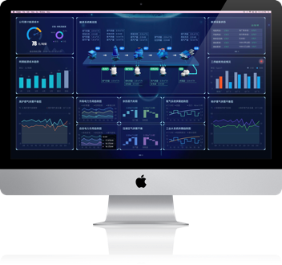

工业智能系统
什么是
工业智能系统？
工业智能系统
基于新工业而架构Thingswise 工业数据OS平台上开发的工业智能系统，是聚整体性协调管控与个性化辅助决策为一体的管理驾驶舱，专为
流程工业（钢铁，有色，水泥，发电，化工等）节能减排，提升效率设计
。
EEwise 智慧能效
面向流程行业节能减排而设计的
新工业架构下能效管理驾驶舱，动态
寻优，实时导航，角色推送
Steelwise 智慧钢铁
面向钢铁行业的界面协同、
工序间连结打通与市场预测下的拉动排产，
提升钢铁企业的产能和效率
PowerGenWise智慧发电
面向流程行业的自备电厂的综合寻优，
解决自备电厂平衡保供生产和
设备运行优化经济性的问题
Leanwise智能精益
面向流程行业，将精益管理系统化，
解决设备智能综合管理，班组数
字化精益管理及KPI绩效管理的问题
Cokewise 智能焦化
面向焦化企业的设备，物料，能效
的智能化管理，提升产能和效率
Envwise 智慧环境
和水，碳等合作伙伴共同升发的针对
工业企业的基于新工业架构下的
污水处理和碳排查服务等的智能应用
专为流程
行业设计,多维度覆盖
核心关键价值领域

我们的
技术优势
新工业架构下的跨工序协同计算，大尺度整体寻优是优也的领先实践
面向角色推送辅助决策，实现整体性协调管控与个性化辅助决策为一体，极大提升企业生产优化的效率
基于新工业架构，将工业企业数据统一管理，为企业自主快速开发和功能拓展应用提供了可行的基础
基于新工业架构下的工业智能系统，为工业知识和经验通过模型化和软件化的有效沉淀提供了载体，为这些知识和经验的共享，重用和提升提供了新的能力
客户价值
产能提升
节能减排
成本控制
质量改进